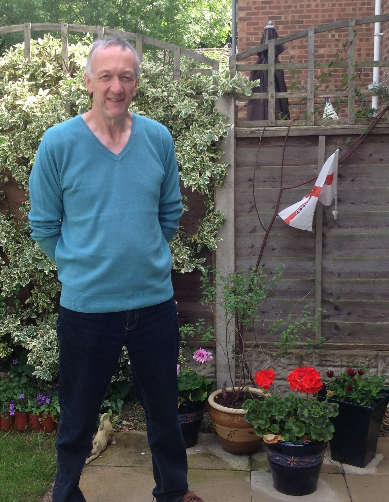

“I would encourage anyone to go for it. I understand the possible hesitation but I am happy to confirm all that you see about this business is true.”
Steven runs our Redditch and Bromsgrove area. He decided on the franchising route to starting a business as he was looking for a proven and supported way of running a business with limited risk. So why a cleaning franchise? Steven told us “Having been in retail before this time I wanted something that would be service based that would provide ongoing residual income.”
We asked Steven why he chose Diamond Home Support. He told us “Compared to other similar opportunities the start up and ongoing costs are very low. My impression having talked to Andrew at Head Office and other existing franchisees was that of an honest, straight forward, no frills company that offered great support.”
Steven has only recently joined the business, but he told us “Very quickly my first impressions were confirmed and the support was second to none. After taking 4 weeks to set the business up properly good quality workers were joining the database and the first clients were starting to enquire. Although it was a whirlwind few weeks it was also enjoyable.”
We asked Steven how he found the support from the Franchisor? He told us “Excellent. Any questions are answered very quickly and there is an openness in discussions that encourages forward thinking and growth.”
Steven told us the main benefits of the business were “Apart from the excitement of building an income on a monthly basis I do enjoy the interaction with clients and workers and feeling like you are giving something of value to both.”
When looking to the future Steven said “I am excited and look forward to a time in a few years when I can look back at the hard work put in and enjoy the rewards while looking to the future and semi retirement.”
We asked Steven what advice he would give to potential franchisees. He told us “Understand that it is a real opportunity but be realistic. Rewards will in the main depend on effort put in and hours available. Also a positive attitude and the ability to follow a proven manual and business model. Given enough time and patience it is possible to build a good income and a future asset. The prospectus is proving to be very accurate.
I would encourage anyone to go for it. I understand the possible hesitation but I am happy to confirm all that you see about this business is true.”
When asked if he would do anything differently if starting over again Steven told us he would have started years ago!
Find out more about our cleaning franchise business and understand the earning potential. If you haven’t already, why not request a copy of our prospectus. Or find out more about some of our other franchisees.
If you want to find out if we offer services in your area visit out local office page for a full list of our offices around the UK.
Steve – Diamond Home Support franchisee in Redditch, Bromsgrove and KIdderminster
